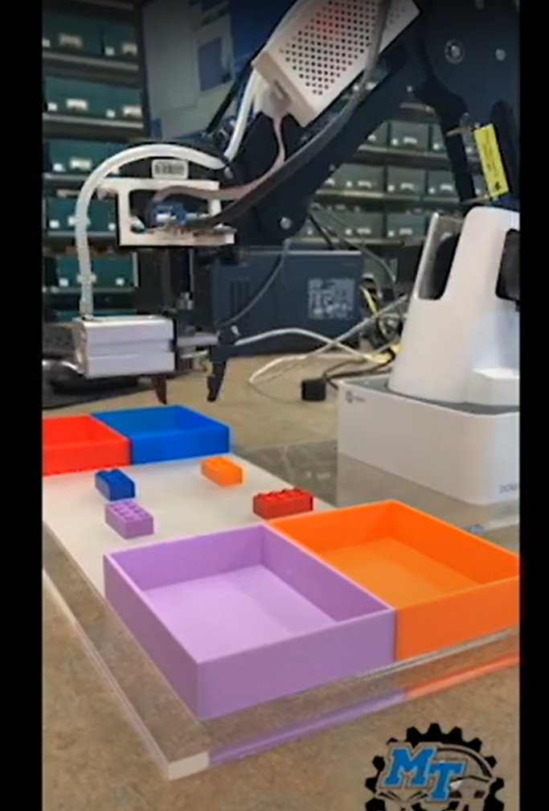

AL-PUB Dataset

Hello! I am an AI and Machine Learning researcher with a background in physics and astronomy. My research
focuses on interdisciplinary applications of AI and Machine Learning. Specifically, my work bridges the
gap between state-of-the-art technologies and ancient literary texts utilizing technologies including
Handwritten Text Recognition (HTR/OCR), Natural Language Processing (NLP), and statistical analysis. My
work specifically focuses on the field of papyrology, but is broadly applicable to computer vision and
language modeling research.
I am the proud creator of the AL-PUB dataset, a large-scale, crowdsourced
image dataset containing Greek characters on ancient papyri. This dataset is available on Kaggle and has
been used in several deep learning based research projects. Other research projects include blockchain
and smart contracts for digital edition management, as well as transfer learning and generative AI. I am
also interested in the application of AI and Machine Learning to other fields such as physics, chemistry,
and astronomy. Additional interests include quantum computing & HPC clusters. Please check out AL-PUB,
my computational projects, and social media pages at the links below. Thanks for visiting!
AL-PUB Dataset
Under Construction
MTSU